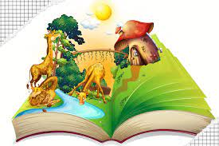
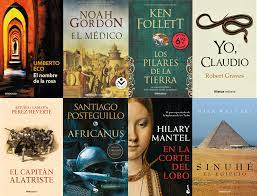
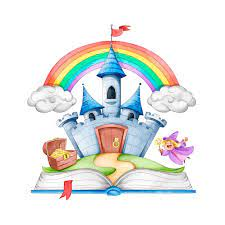
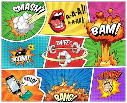

Niños

La literatura infantil es la expresión escrita de la creatividad con un toque artístico.
También está compuesta principalmente por los cuentos,
los mismos son narraciones con personajes estereotipados como recurso de representación social que presentan
aspectos de la vida real y por eso es tan importante
Juvenil
La literatura juvenil no difieren en mucho de los de la literatura de adultos (amor, tragedia, guerra...)
si bien se les da un tratamiento bastante más lineal tanto a estos como a los personajes, siendo estos últimos de poca variabilidad psicológica.
Esta interiorización se minimiza dando mayor importancia a la acción que a la caracterización psicológica de los personajes.
Asimismo, los personajes suelen ser creados para que el público lector pueda identificarse con ellos, especialmente los protagonistas
Ciencia ficción

Género narrativo que sitúa la acción en unas coordenadas espacio-temporales imaginarias y diferentes a las nuestras,
y que especula racionalmente sobre posibles avances científicos o sociales y su impacto en la sociedad.
Novelas

Narración literaria más o menos extensa, usualmente de carácter ficcional, en la que se cuenta una serie de eventos prolongados en el tiempo,
con el fin de entretener y brindar placer estético a sus lectores. Es, junto con la crónica y el cuento,
uno de los subgéneros en que se divide el género de la narrativa, cuyo rasgo distintivo es la construcción ficcional de un narrador.
Cuento
Tipo de narración generalmente breve, basada en hechos reales o ficticios, en la cual un grupo de personajes desarrollan una trama relativamente sencilla. En el ámbito literario es uno de los subgéneros de la narrativa, ampliamente cultivado por escritores de muy distintas tradiciones.
Cómic

Un CÓMIC o HISTORIETA es una técnica que consiste en contar una historia a través de dibujos y textos escritos, aunque a veces puede aparecer sin texto. También se llama así al libro que contiene esta historia.